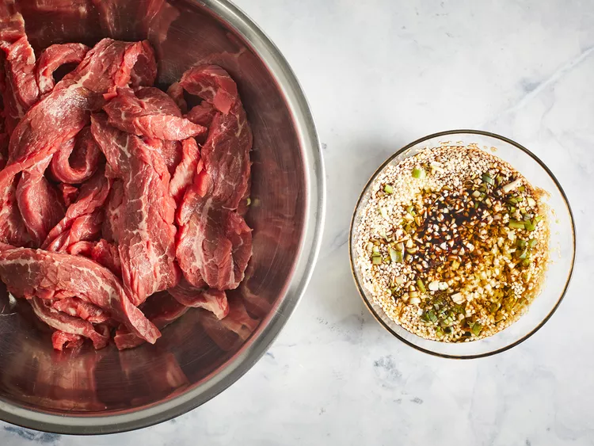
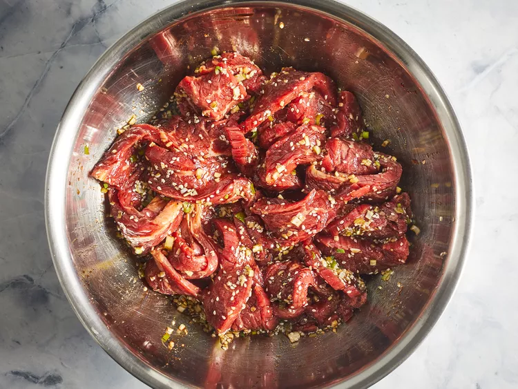
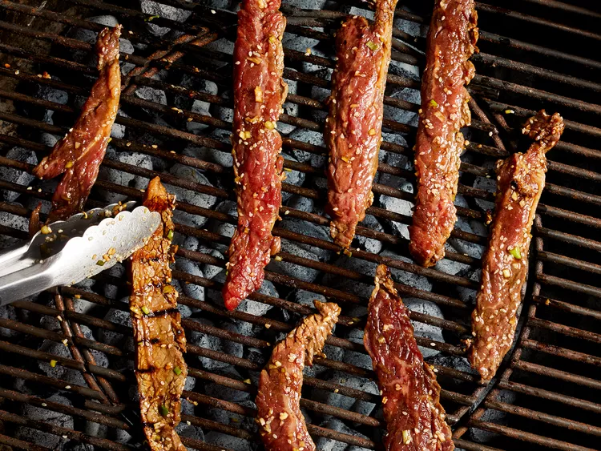
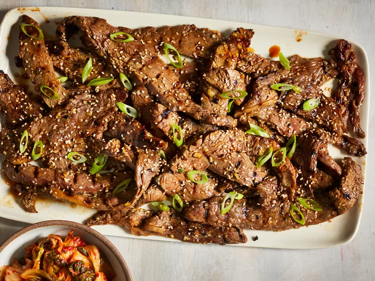

Beef Bulgogi is one of the most popular type of meat people eat in Korea. It hits all the right spots from salty, to sweet. Don't miss out on this staple in Korean cuisine!
Whisk soy sauce, green onion, sugar, garlic, sesame seeds, sesame oil, and pepper together in a bowl.
Place steak slices or Beef in a shallow dish. Pour marinade over top. Cover and refrigerate for at least 1 hour or overnight.
Preheat an outdoor grill for high heat, and lightly oil the grate.
Quickly grill flank steak slices on the preheated grill until slightly charred and cooked through, 1 to 2 minutes per side.
Serve hot and enjoy!